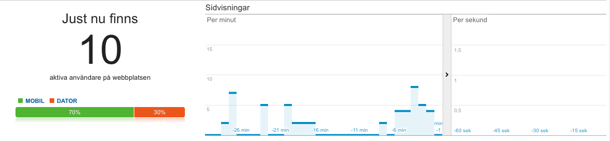
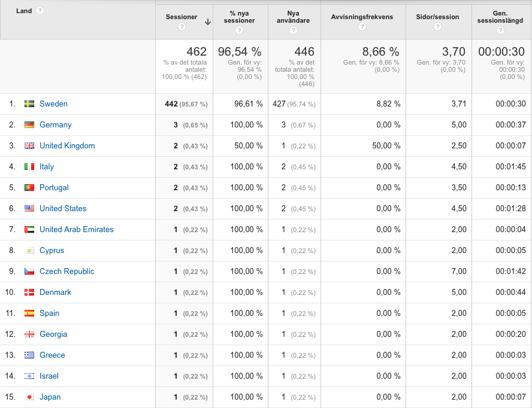

Hypothesis
People who receive information on how much an average Swedish household spend on travel, hotels and candy, along with information about how much a visit to the museum costs on average, are more likely to pay more for a service of having a guided audiotour in a city they visit for vacation.
Result
Number of people willing to pay a certain amount for the service
together with the Average price they're willing to pay
- 154 of respondents uninformed
- 170 of respondents informed (+16)
- Majority of people answer that they are willing to pay between 51 and 60 SEK
- 31 of the uninformed respondents change to a lower price
- 28 of the informed respondents change to a lower price
- 122 of the uninformed respondents change to a higher price
- 140 of the informed respondents change to a higher price
Unbiased (?)
- 90 of respondents uninformed
- 116 of respondents informed (+26)
- Majority of people answer that they are willing to pay between 101 and 110 SEK
- 34 of the uninformed respondents change to a lower price
- 35 of the informed respondents change to a lower price
- 55 of the uninformed respondents change to a higher price
- 79 of the informed respondents change to a higher price
Conclusion
- Be careful how you design your survey, ask a silly question...
- The survey aimed to invastigate how people will behave who receive information before they buy something vs. if they don't receive information
- The fact that the survey involved a default value influenced the outcome
Google Analytics

